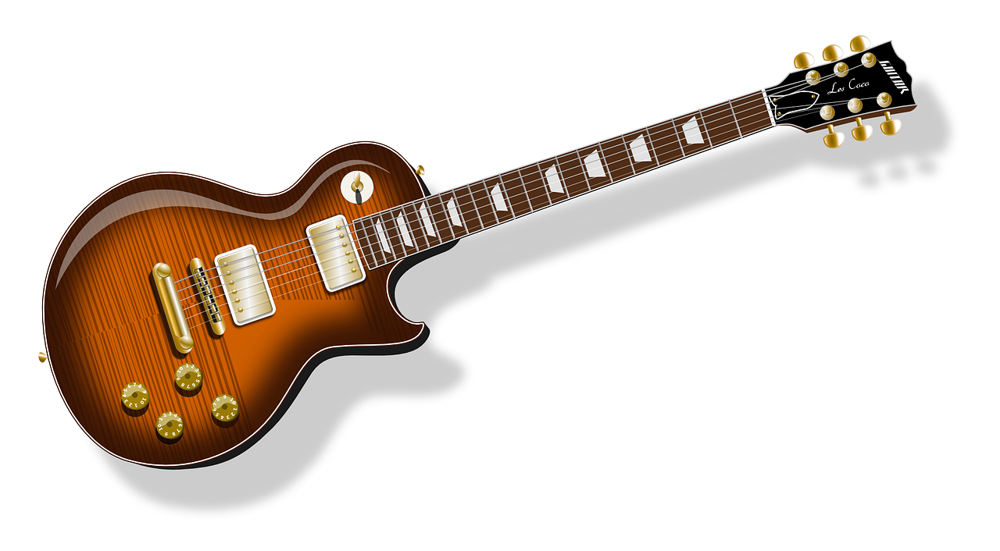
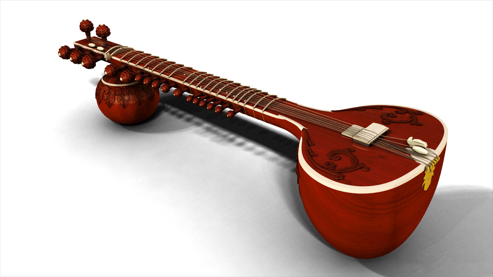
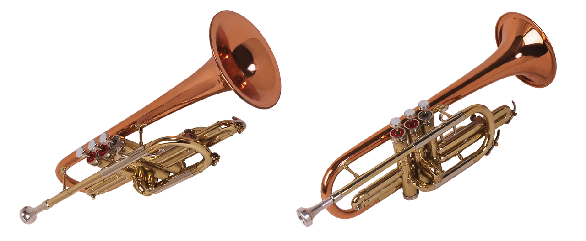
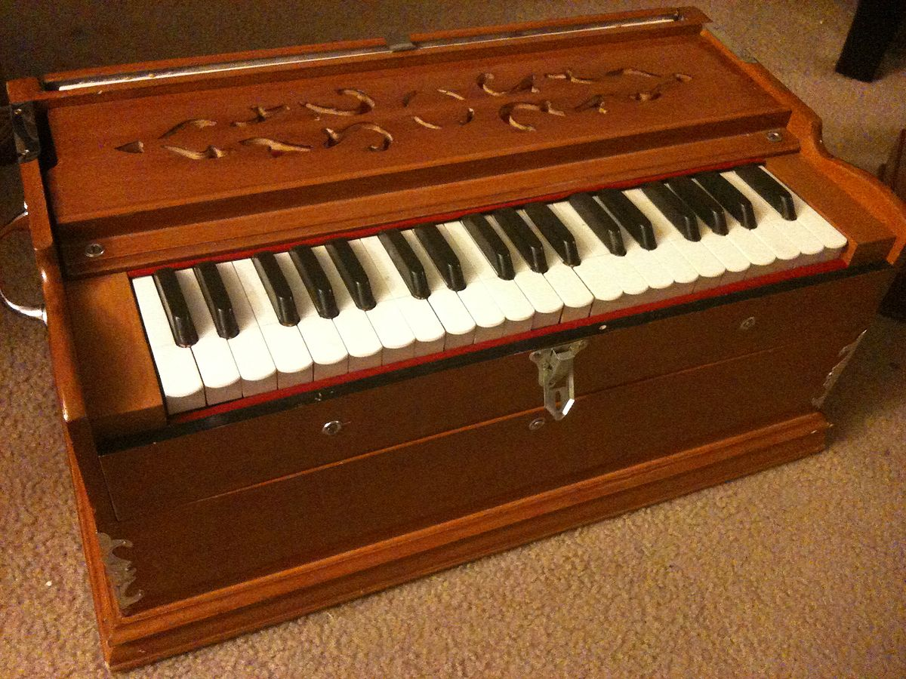
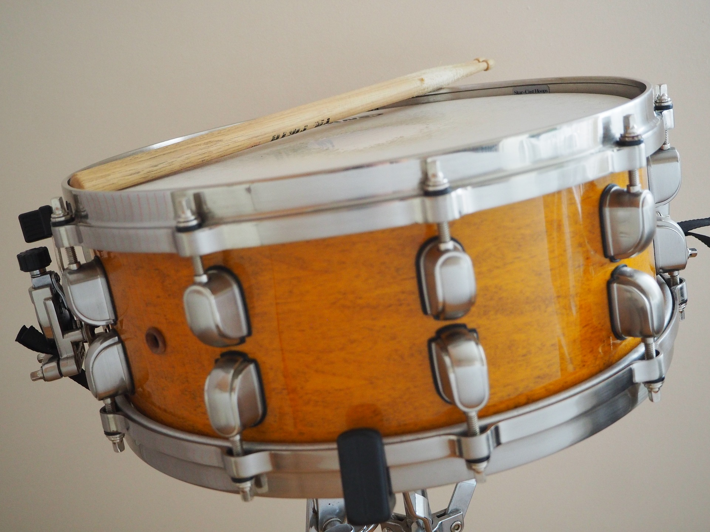

The guitar is a string instrument which is played by plucking the strings. The main
parts of a guitar are the body, the fretboard, the headstock and the strings. Guitars are usually made
from wood or plastic. Their strings are made of steel or nylon.
The guitar strings are plucked with the fingers and fingernails of the right hand (or left hand, for
left handed players), or a small pick made of thin plastic. This type of pick is called a "plectrum" or
guitar pick. The left hand holds the neck of the guitar while the fingers pluck the strings. Different
finger positions on the fretboard make different notes.
Guitar-like plucked string instruments have been used for many years. In many countries and at many
different time periods, guitars and other plucked string instruments have been very popular, because
they are light to carry from place to place, they are easier to learn to play than many other
instruments. Guitars are used for many types of music, from Classical to Rock. Most pieces of popular
music that have been written since the 1950s are written with guitars.

The sitar (English: /ˈsɪtɑːr/ or /sɪˈtɑːr/; IAST: sitāra) is a plucked stringed
instrument, originating from the Indian subcontinent, used in Hindustani classical music. The instrument
was invented in medieval India and flourished in the 16th and 17th centuries and arrived at its present
form in 18th-century India.
Used widely throughout the Indian subcontinent, the sitar became popularly known in the wider world
through the works of Ravi Shankar, beginning in the late 1950s and early 1960s.[1] In the 1960s, a
short-lived trend arose for the use of the sitar in Western popular music, with the instrument appearing
on tracks by bands such as the Beatles, the Doors, the Rolling Stones, Metallica and others.

A drum set – also called a drum kit, trap set (an abbreviation of the word "contraption")[1] or simply
drums – is a collection of drums, cymbals and other percussion instruments, which are set up on stands
to be played by a single player,[2] with drumsticks held in both hands and the feet operating pedals
that control the hi-hat cymbal and the beater for the bass drum. A drum kit consists of a mix of drums
(categorized classically as membranophones, Hornbostel-Sachs high-level classification 2) and
idiophones – most significantly cymbals, but can also include the woodblock and cowbell (classified as
Hornbostel-Sachs high-level classification 1).[3] In the 2020s, some kits also include electronic
instruments (Hornbostel-Sachs classification 53). Also, both hybrid (mixing acoustic instruments and
electronic drums) and entirely electronic kits are used.

The violin, sometimes known as a fiddle, is a wooden chordophone (string instrument) in the violin
family. Most violins have a hollow wooden body. It is the smallest and thus highest-pitched instrument
(soprano) in the family in regular use.[a] The violin typically has four strings, usually tuned in
perfect fifths with notes G3, D4, A4, E5, and is most commonly played by drawing a bow across its
strings. It can also be played by plucking the strings with the fingers (pizzicato) and, in specialized
cases, by striking the strings with the wooden side of the bow (col legno).
Violins are important instruments in a wide variety of musical genres. They are most prominent in the
Western classical tradition, both in ensembles (from chamber music to orchestras) and as solo
instruments. Violins are also important in many varieties of folk music, including country music,
bluegrass music and in jazz. Electric violins with solid bodies and piezoelectric pickups are used in
some forms of rock music and jazz fusion, with the pickups plugged into instrument amplifiers and
speakers to produce sound. The violin has come to be incorporated in many non-Western music cultures,
including Indian music and Iranian music. The name fiddle is often used regardless of the type of music
played on it.

The trumpet is a brass instrument commonly used in classical and jazz ensembles. The trumpet group
ranges from the piccolo trumpet with the highest register in the brass family, to the bass trumpet,
which is pitched one octave below the standard B♭ or C Trumpet.
Trumpet-like instruments have historically been used as signalling devices in battle or hunting, with
examples dating back to at least 1500 BCE. They began to be used as musical instruments only in the late
14th or early 15th century.[1] Trumpets are used in art music styles, for instance in orchestras,
concert bands, and jazz ensembles, as well as in popular music. They are played by blowing air through
nearly-closed lips (called the player's embouchure), producing a "buzzing" sound that starts a standing
wave vibration in the air column inside the instrument.[2] Since the late 15th century, trumpets have
primarily been constructed of brass tubing, usually bent twice into a rounded rectangular shape.

A harmonium, also called a "melodeon", "reed organ" or "pump organ", is a keyboard instrument that is a
lot like an organ. It makes sound by blowing air through reeds, which are tuned to different pitches to
make musical notes.
A harmonium can be made to work using either the feet or the hands:
In a foot-pumped harmonium, the player presses two pedals with his or her feet, one at a time. This is
joined to a mechanism which operates a bellows, sending air to the reeds. In this way, both of the
player's hands are free to play the keyboard. This type was invented in 1842 by Alexandre Debain of
Paris, although similar instruments have been made in other places around the same time.

The drum is a member of the percussion group of musical instruments. In the Hornbostel-Sachs
classification system, it is a membranophone.[1] Drums consist of at least one membrane, called a
drumhead or drum skin, that is stretched over a shell and struck, either directly with the player's
hands, or with a percussion mallet, to produce sound. There is usually a resonance head on the underside
of the drum, typically tuned to a slightly lower pitch than the top drumhead. Other techniques have been
used to cause drums to make sound, such as the thumb roll. Drums are the world's oldest and most
ubiquitous musical instruments, and the basic design has remained virtually unchanged for thousands of
years.[1]
Drums may be played individually, with the player using a single drum, and some drums such as the djembe
are almost always played in this way. Others are normally played in a set of two or more, all played by
the one player, such as bongo drums and timpani. A number of different drums together with cymbals form
the basic modern drum kit.